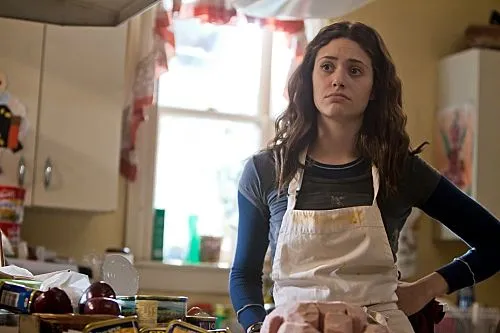
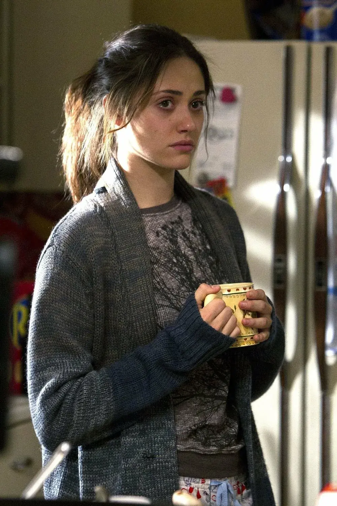
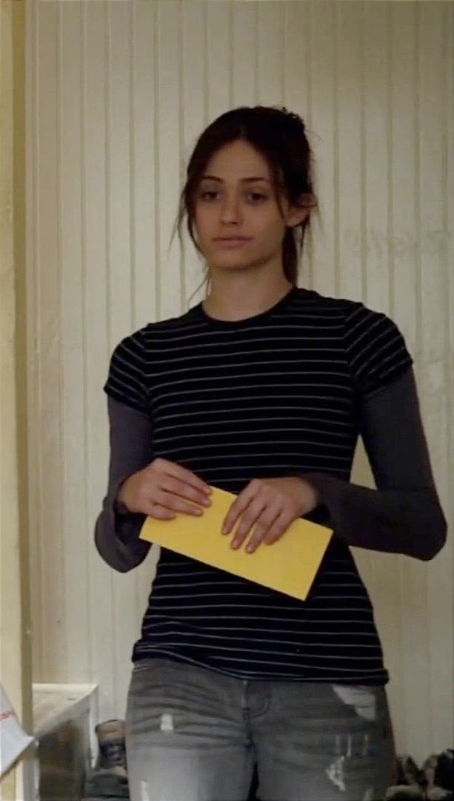
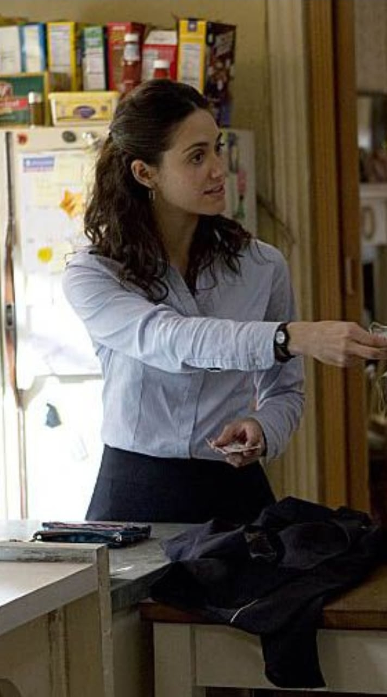
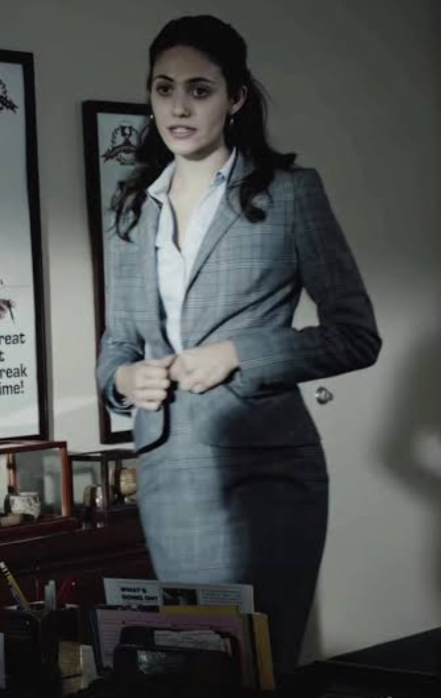
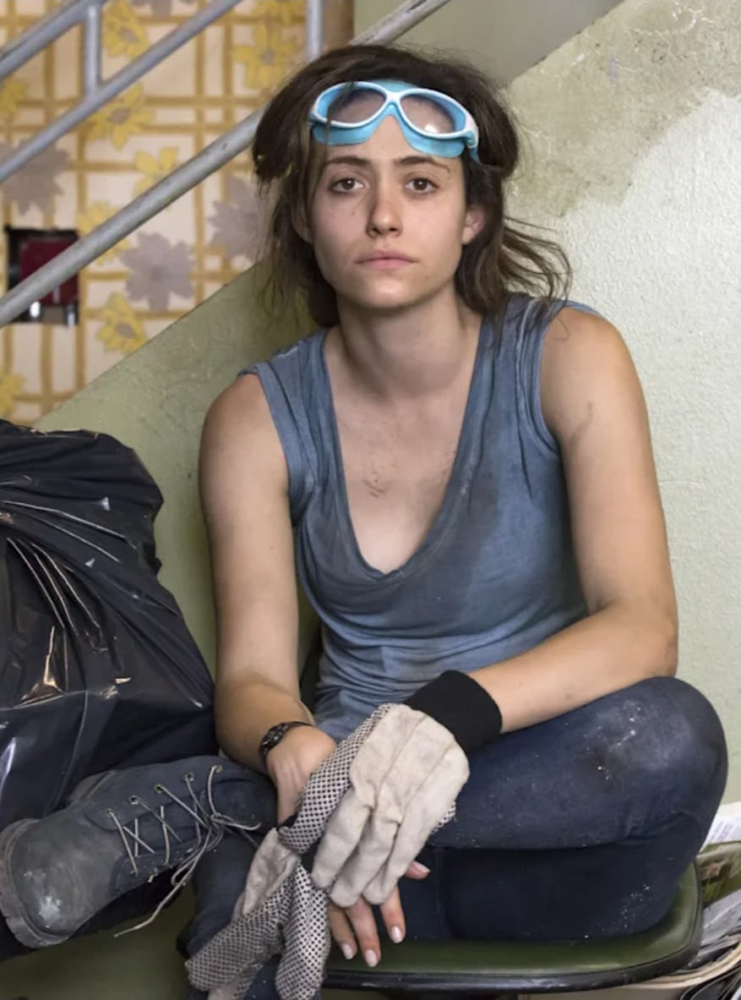
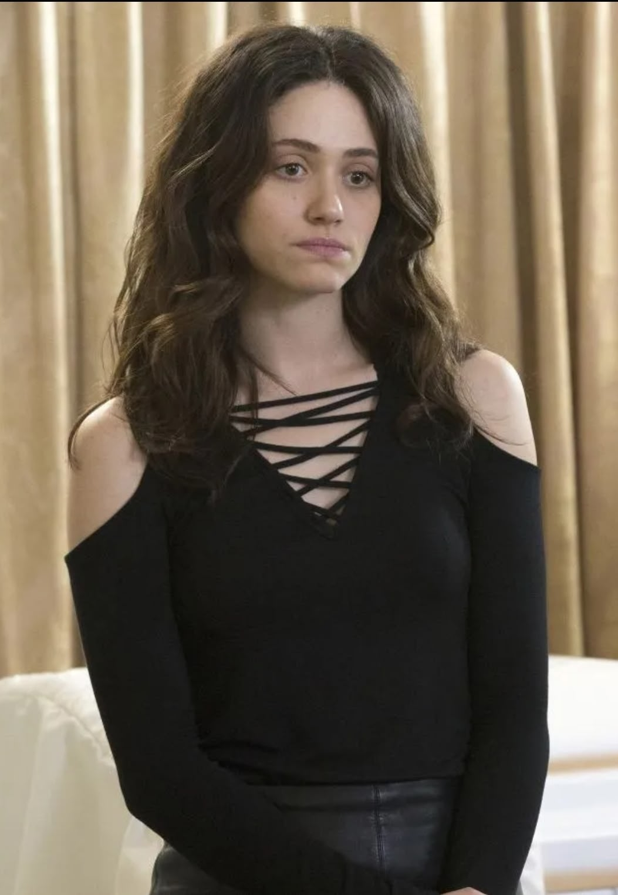
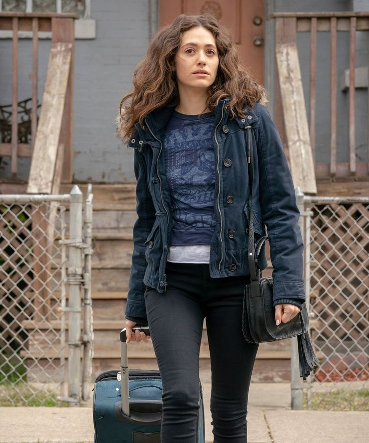

Сезоны 1-3: борец за выживание
В первых сезонах Фиона - это простая девушка, которая заботится о семье изо всех сил и пытается сохранить стабильность. Она взяла на себя роль матери для четырех братьев и сестры. Стиль Фионы - практичность и минимализм. Ее образ в этот период можно охарактеризовать как “уличный шик бедного Чикаго”. Она одевается для комфорта, чтобы успевать делать сто дел одновременно.
Образ: мешковатые толстовки, растянутые джинсы, бесформенные худи. Фиона носит одежду, которая не требует особого ухода. Это джинсы (часто скинни), джинсовые куртки, простые футболки и майки на тонких лямках. Волосы собраны в небрежный пучок. Выходы в свет - редкое событие, и тогда она натягивает слишком откровенное платье. В целом, одежда Фионы кажется поношенной, купленной в секонд-хенде или донашиваемой, что подчеркивает ее финансовое положение.


Внутреннее состояние: Фиона – стержень семьи Галлагеров. Она сильная, но измотанная. Ее одежда отражает эту усталость и отсутствие времени на заботу о себе. Она жертвует личным комфортом ради братьев и сестры, и это видно даже в ее образе. Фиона редко жалуется и плачет, интересы своей семьи Фиона всегда ставит выше своих. К 3 сезону у Фионы накапливается усталость. Ее постоянное “спасение” всех вокруг начинает приводить к внутреннему выгоранию.
Сезоны 4-6: бунтарка и мечтательница
В этих сезонах Фиона начинает работать в прачечной, и ее одежда становится более женственной и аккуратной. Фиона начинает обретать уверенность в себе. Ее стиль становится более разнообразным: появляются юбки, рубашки, аксессуары. Это отражает ее стремление к независимости и самовыражению. Однако, это время считается самой низкой точкой падения персонажа. Из-за саморазрушительного поведения в скором времени Фиона теряет работу, доверие семьи и близких друзей.


Образ: блузки, деловые юбки, лодочки. Она даже пробует закалывать волосы в гладкий пучок - хочет выглядеть «правильно». Но эта броня трещит по швам: алкоголь, депрессия, проблемы в отношениях. Одежда становится способом демонстрации ее социального статуса и внутреннего состояния. От образа “вечно зажатой мамочки” она переходит к попыткам найти себя, совершая тяжелые ошибки. Фиона борется между желанием заботиться о семье и жить собственной жизнью.
Внутреннее состояние: несмотря на внешние изменения, внутреннее состояние Фионы остается нестабильным. Фиона сталкивается с новыми вызовами, включая сложные отношения и финансовые трудности. Она надевает костюм успешной женщины, как скафандр, под которым задыхается. Внутри все та же напуганная девочка из Южного Чикаго. Ее гардероб становится отражением борьбы между желанием быть сильной и страхом потерять контроль.
Понравился материал? Вы можете поддержать автора монеткой
Поддержать КиноГидСезоны 7-9: бизнес-леди или сломленная мечтательница
В этот период стиль Фионы становится более строгим. Что касается внутреннего состояния - Фиона покупает квартиру, но внутри испытывает постоянное выгорание и гнев, становясь более эгоцентричной и жестокой. В этих сезонах борьба между чувством долга перед семьей и желанием жить для себя усиливается, приводя к проблемам в бизнесе и личной жизни.


Образ: офисные наряды, блузки, пиджаки, юбки-карандаши. Она больше заботится о своем внешнем виде, стараясь выглядеть профессионально и взросло. Однако в моменты кризиса она вновь возвращается к привычным джинсам и футболкам, словно напоминая себе о прошлом. Одежда вновь становится более хаотичной и менее ухоженной, что символизирует потерянность и тревожность.
Внутреннее состояние: Фиона пытается доказать всем (и себе), что она способна на большее. Она берет на себя риски, открывает собственный бизнес и мечтает вырваться из бедности. Ее стиль отражает эту амбициозность, но также показывает, как легко все может рухнуть. Когда она сталкивается с неудачами, ее гардероб становится более простым и хаотичным, словно она теряет контроль над своей жизнью. В моменты выгорания цвета ее одежды становятся более тусклыми, а выбор самой одежды - менее осознанным. Это время характеризуется чувством потери и неопределенности. Фиона начинает осознавать свои ошибки и последствия своих решений, что приводит к глубоким внутренним конфликтам.
Конец 9 сезона и уход: усталость и поиск свободы
К концу 9 сезона Фиона достигает пика истощения от роли “матери” для своих братьев и сестры. Ее уход - это акт самосохранения, а не предательства, желание наконец заняться собственной жизнью. Она понимает, что оставаясь в Чикаго, она всегда будет нести ответственность за Галлагеров. Психологически она перерастает роль “главы семьи”. Фиона принимает свою сущность - способность выживать в любых условиях, что позволяет ей уехать с деньгами и начать все с начала, несмотря на ошибки.


Образ: удобные джинсы, свитшоты, мягкие кардиганы. Стиль Фионы менялся по мере роста ее финансового благополучия. В моменты ухода Фиона выбирает функциональные, но более качественные вещи, символизирующие готовность к нового этапу, но сохраняющие ее “уличный стиль”. Это период, когда она перестает пытаться соответствовать чужим ожиданиям.
Внутреннее состояние: Фиона больше не доказывает. Не спасает. Она наконец стала той, кого спасают (например, собой). Гардероб теперь не маскирует — он отражает внутренний стержень. Ей не нужны ни кожа, ни декольте, чтобы быть замеченной. В финале сериала подразумевается, что Фиона смогла построить свою жизнь в другом месте, в отличие от остальных членов семьи, которые продолжают жить с травмами своего воспитания.